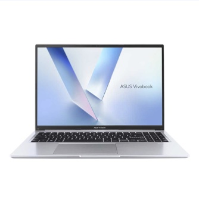

מעבד Core 9ASUS Vivobook 16
Intel Core 9 270H
מחשב נייד 16 אינץ' עם מעבד מסדרת H של אינטל, הסדרה החזקה לניידים, במקום מעבד חסכוני מסדרת U כמו ברוב הניידים בטווח המחיר הזה. מסיים ייצוא וידאו, גיליונות אקסל כבדים וקומפילציה בחצי מהזמן.
כמה זה מהיר יותר?
השוואה ל-Intel Core i7-1355U (i7 דור 13 מסדרת U), המעבד הנפוץ בניידים משרדיים.
ממוצעי מדידות ממאגרי בנצ'מרק ציבוריים. ביצועים בפועל תלויים בתצורה, בקירור ובסוג העומס.
למי זה מתאים?
עבודה משרדית כבדה
אקסל עם טבלאות גדולות, עשרות לשוניות ומספר יישומים במקביל, בלי איטיות.
עריכת וידאו ותמונה
ייצוא ורינדור ב-Premiere, DaVinci ו-Lightroom: כאן ההבדל מול מעבד U מורגש במיוחד.
פיתוח תוכנה
קומפילציה, Docker ומכונות וירטואליות: הליבות הנוספות מקצרות זמני בנייה.
לימודים והוראה
מסך 16 אינץ' בפורמט 16:10 וזיכרון לריבוי משימות לאורך כל היום.
פחות מתאים לגיימינג תובעני ולעבודות תלת-ממד כבדות: למחשב אין כרטיס מסך נפרד. לצרכים אלה כדאי לבחור דגם מקטגוריית גיימינג.
מפרט מלא
| מעבד | Intel Core 9 Processor 270H: 14 ליבות / 20 תהליכונים, בסיס 2.7GHz, טורבו עד 5.8GHz, מטמון 24MB, הספק 45W |
|---|---|
| זיכרון | 16GB DDR5 (8GB מולחם + מודול SO-DIMM) אפשרות להזמנה עם 24GB או 40GB |
| אחסון | 1TB SSD M.2 NVMe PCIe 4.0 |
| גרפיקה | Intel Graphics משולב במעבד |
| מסך | 16 אינץ' WUXGA (1920×1200), יחס 16:10 |
|---|---|
| יציאות | 2× USB-C (USB 3.2 Gen 1), אחת עם טעינה (Power Delivery) 2× USB-A (USB 3.2 Gen 1) + 1× USB-A 2.0 HDMI 1.4, שקע אוזניות 3.5 מ"מ |
| תקשורת ומצלמה | Wi-Fi 6 Dual Band, Bluetooth 5.4, מצלמת 720p |
| צבע ומשקל | Cool Silver, 1.88 ק"ג |
| מערכת הפעלה | Windows 11 Pro, כולל התקנות מלאות |
| אחריות | שנה, אחריות יצרן רשמית |
המפרט לפי נתוני היצרן ועשוי להשתנות. התמונה להמחשה בלבד.